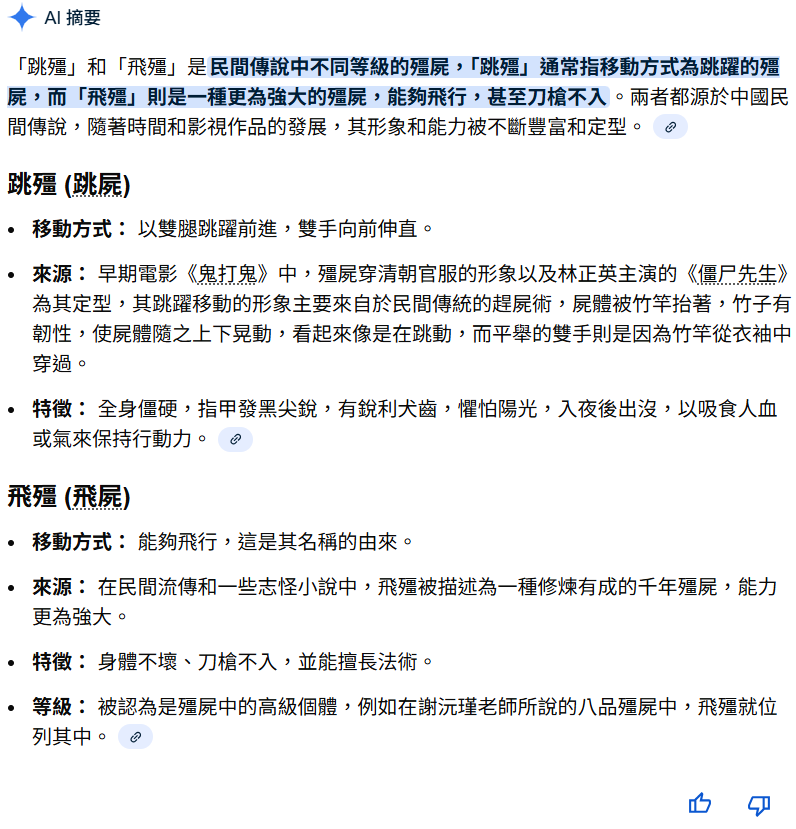

殭屍世界觀百科互動版
本網頁的作者不僅是吸血鬼文化的熱衷愛好者，還是深度探討東西方吸血鬼與殭屍題材的專家。多年来，他接觸過大量的吸血鬼作品和殭屍電影，無論是西方經典如《德古拉》、《夜訪吸血鬼》、《刀鋒戰士》、《暮光之城》、《凡赫辛》、《吸血鬼獵人：林肯總統》、《Hotel Transylvania》，還是東方的代表作如《殭屍先生》、《殭屍叔叔》、《音樂殭屍》、《殭屍家族》、《殭屍道長》、《千年殭屍王》，他都在不斷比較與探索。這使他對吸血鬼這一文化象徵有了獨特的理解，並且能夠深入分析這些超自然生物在不同文化中的呈現方式和隱喻意涵。
作為一名前端開發者，作者運用自己的技術背景，將這些文化分析與比較呈現於網頁中。他並不滿足於單純的文字敘述，而是通過結合互動性強的網頁設計和創意排版，將這些吸血鬼與殭屍的知識以更直觀、趣味十足的方式呈現給讀者。他將這一前端作品部署到GitHub Pages，開設專案，將自己的文化研究和技術技能結合，讓更多人可以輕鬆地接觸到這些深入且富有思考的內容。
目錄
隨便點選下方其中一個主題便能直接跳到該主題的說明區
原始民間殭屍
根據清代的小說家袁枚所著的《子不語》，殭屍最早被記錄為復活的死人或附有鬼氣的存在，會跳、抓人，但能力有限，可被符咒或道術制服。原始記載重點是象徵危險性與民間警示。
魃 / 犼能力分析
殭屍進階型態：跳殭 → 飛殭 → 魃 → 犼。後世小說與民間傳說中，魃與犼能力被誇張化：
| 等級 | 名稱 | 能力 | 例子 |
|---|
| 基礎 | 跳殭 | 普通復活死人，跳躍抓人 | - 《殭屍先生》裡的任威勇
- 《殭屍家族》裡的殭屍夫妻
- 《殭屍叔叔》裡的皇族殭屍
- 《新·殭屍先生》裡的殭屍群
|
| 進階 | 飛殭 | 由跳殭進化而成的殭屍，可浮空飛行 | - 《千年殭屍王》裡的大魔王
- 《殭屍道長》裡的愛新覺羅·玄魁
|
| 高階 | 魃 | 可飛天遁地、製造瘟疫與乾旱 | 後世民間/小說誇張化版本 |
| 最高 | 犼 | 可飛天遁地、吐火、吞龍 | 後世民間/小說誇張化版本 |

電影裡的殭屍的等級分析
電影裡的殭屍通常保持在普通人可對付的範圍內，速度與力量略高，但仍可被智慧、勇氣或專業知識（如茅山道術）戰勝。這保留了戲劇張力，使觀眾能感受到主角努力的價值。
為什麼大多數電影裡的殭屍的等級普遍不高
- 保持敘事張力：若殭屍太強，故事會變成神話史詩或超級英雄片。
- 凸顯主角能力：普通人可戰勝殭屍，故事才有代入感與趣味。
- 保留民俗特色：尊重古代志怪故事象徵性，而非追求絕對能力值。
為什麼犼不出現在電影
犼是觀音菩薩的坐騎，能力極強（飛天遁地、吐火、吞龍）。如果電影出現犼，並且觀音菩薩親自降伏，會導致：
- 經典角色（道士、徒弟、保安隊長、千金小姐）的存在感被削弱。
- 故事張力完全消失，主角努力毫無意義。
- 情感線、角色互動失去焦點，觀眾注意力偏向神明與犼。
- 電影故事風格會偏向《西遊記》式神魔史詩，而非殭屍冒險片。
因此，電影裡根本不會出現犼這種等級的殭屍。
殭屍能力可視化
下圖呈現跳殭、飛殭、魃、犼在力量、速度、飛行能力、元素攻擊、特殊技能的比較：